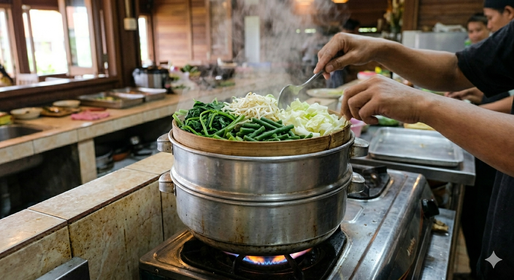
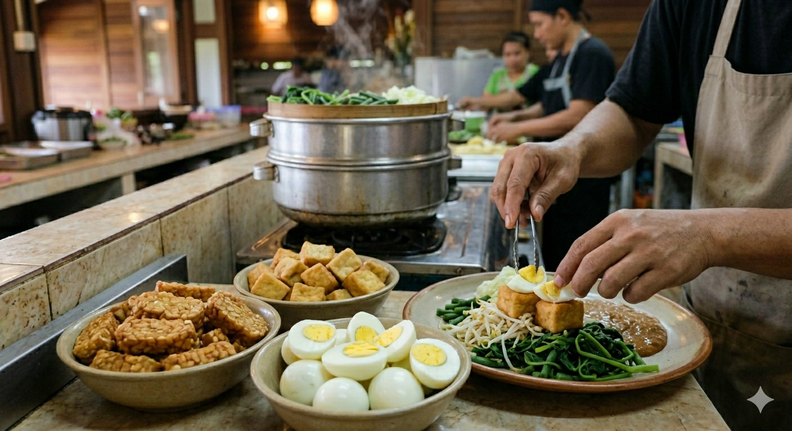
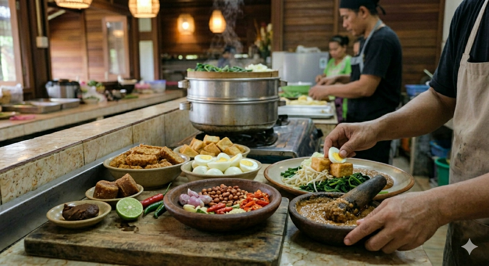

Pilihan Lokal
Tinggi Serat
Gado-Gado Siram Spesial
shopping_basket Bahan-bahan
200g Sayuran Campur (Bayam, Tauge, Kacang Panjang)
2 buah Tahu & Tempe (Panggang/Air-fry)
1 butir Telur Rebus
1 buah Kentang Rebus sedang
100ml Saus Kacang Rendah Lemak NutriNesia
Garnis: Emping & Bawang Goreng
restaurant_menu Instruksi Memasak
1
Mengukus Sayuran
Cuci bersih semua sayuran. Kukus sebentar (3-5 menit) hingga lunak namun tetap memiliki tekstur renyah dan warna yang cerah untuk menjaga nutrisi.

2
Menyiapkan Protein
Potong tahu dan tempe sesuai selera. Panggang di atas teflon atau gunakan air-fryer tanpa minyak hingga berwarna keemasan untuk hasil yang lebih sehat.

3
Saus & Penyajian
Siapkan saus kacang rendah lemak. Tata sayuran, kentang, tahu, tempe, dan telur di piring. Siram dengan saus kacang dan tambahkan garnis secukupnya.
